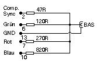
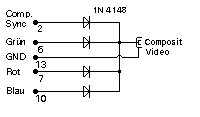
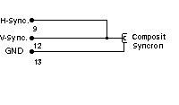

|
|
18.7 BAS Video
BAS Video (Monochrome)
Der BAS (Monochrome) Videoanschluß:
Hiermit könnte z.B ein Bild des Atari ST in
Videoüberwachungsanlagen eingespielt werden. Der Signalpegel ist
kompatibel
 Abbildung 1 - Monitoranschluß für BAS-Signal
Wenn sie einen Atari Computer besitzen der kein Composit
Videosignal erzeugt, kann dieses Signal auch wie folgt
Nachgerüstet werden:
 Abbildung 2 - Monitoranschluß für Composit
Video-Signal (FBAS)
Composit Sync
Wenn sie einen Atari Computer besitzen der kein Composit Syncron
erzeugt, kann dieses wie folgt Nachgerüstet werden:
 Abbildung 3 - Monitoranschluß für Composit-Syncron
Signal
->|- stellt eine einfach 1N4148 Diode dar.
|
|
|